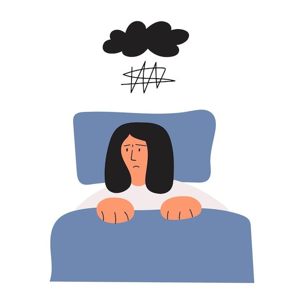
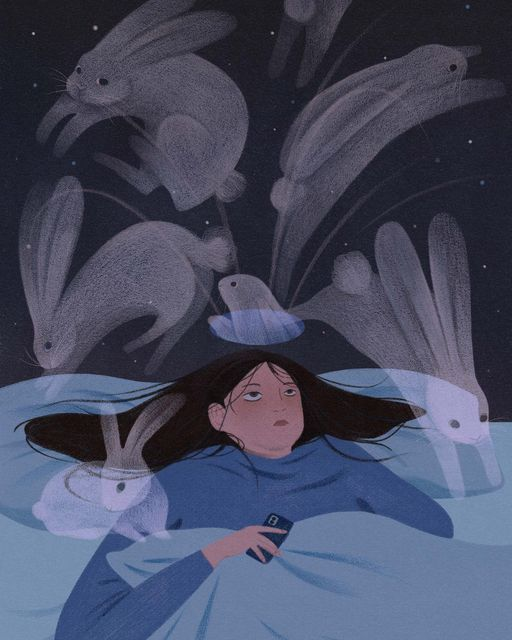

Impact of Insomnia
Insomnia reaches far beyond a single sleepless night. It slowly reshapes the body, mind, and everyday life—from physical health to emotions, work, and relationships. Understanding its impact shows why insomnia is not just a personal problem, but a wider social and public health issue.
Physical Health Consequences
Insomnia weakens the body's natural defense system. People who struggle with chronic sleep problems are more vulnerable to infections, colds, and slow recovery from illness. Long-term lack of rest also increases the risk of serious conditions such as heart disease, hypertension, diabetes, and obesity. Even short-term sleep loss can affect skin health, making the body age faster and slowing down the healing process.
Mental and Emotional Effects
The mind suffers deeply from insomnia. Sleep deprivation worsens anxiety and depression, creating a cycle where mental distress prevents proper rest, and poor rest increases emotional struggles. It also affects memory, focus, and decision-making skills. Many people with insomnia report feeling mentally “foggy” or detached, making everyday activities like studying, working, or even simple conversations more challenging.
Social and Economic Impacts
Insomnia does not only affect individuals; it affects society. At work, fatigue lowers productivity, increases errors, and leads to huge financial losses. On the road, drowsy driving is proven to be as dangerous as drunk driving, making insomnia a hidden risk in public safety. On a personal level, irritability and unstable moods can damage family relationships and friendships, creating emotional distance between people.

A Broader Public Health Issue
Insomnia is more than just a private nighttime battle. It is a widespread problem that touches health, work, and social life. Recognizing its impact helps us understand why addressing insomnia is urgent—not only for personal well-being but also for the health of communities and societies.